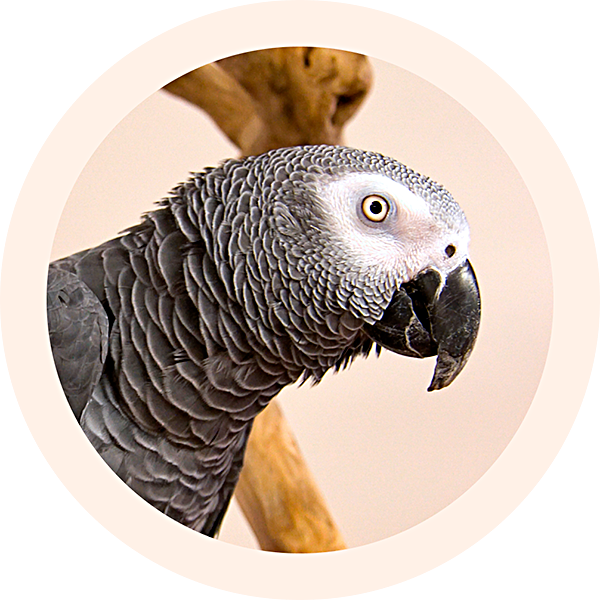

Jokie
“My parents were worried about my health as I didn't want to eat at all. A vet at Best.Pet helped them a lot, explained the peculiarities of parrots feeding, and offered a special meal plan. Yummy!”
October 28, 2021

Axel
"When Mummy traveled abroad, she couldn't take me with her. So, she called Best.Pet, and Alina came to care for me for 2 weeks. I really liked Alina; we had so much fun and enjoyed long walks."
March 03, 2021

Milo
"I have to take medications regularly. When my parents decided to go on a vacation, they were worried about my feeding. They called a pet sitter Mary, and we liked each other so much!"
December 12, 2022